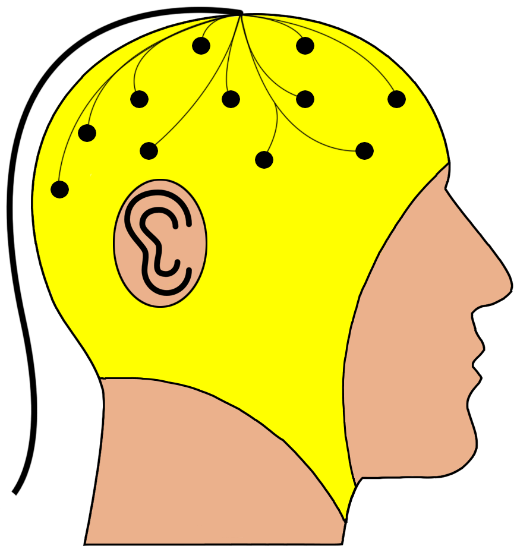

Les différents type de capteur
Les capteurs utilisé pour une interface cerveau machine détermine quel utililisation va en être faite et l'efficacité de cette utilisation. Il existe alors différents types de capteurs pour répondre aux différentes problématiques des interfaces cerveaux machines. présentation vite fait de la problématique
Les capteurs non invasif.
Les capteurs non invasifs ne sont pas en contact avec le crâne du patient, ce système ne nécessite donc pas d'opérations, mais la boite cranienne réduit la qualité des informations reçu. Les techniques les plus utilisés sont l'électroencéphalographie, techniques qui amplifie les potentiels électrique émis par le cerveau pour savoir quel partie est active, et qui a un cout relativement faible, ou encore une autre technique plus récente est le magnétoencéphalographie qui permet une plus grande précision mais a un coût important.
qqchose + une image d'illustration
Les capteurs semi invasifs
Les capteurs semi invvasifs sont des capteurs qui sont implémentés dans la boite crânienne mais sans toucher le cerveau, la précision est plus grande que pour un capteurs non invasif mais demande une opération, cependant les risques sont moindres comparés à un capteur inavsif. Ces capteurs utilisent des lasers qui mesurent l'activité du neuronne, lorsque les neuronnes s'activent la réflexion du laser est alors modifié.
qqchose + une image

Les capteurs invasifs
Les capteurs invasifs sont des capteurs implémentés dans la boite cranienne en contact avec le cerveau, plus précisement avec la matière grise, pour cela il faut une opération importante consistant à placer une puce en contact avec le cerveau, le patient peux toutefois rejeter la puce emmenant des complications. Cependant les capteurs invasifs ont une très bonne résolution, les possibilités sont donc beaucoup plus importantes.
qqchose + une image d'illustration